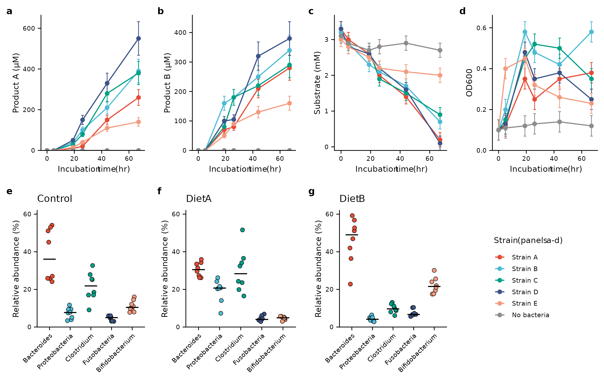
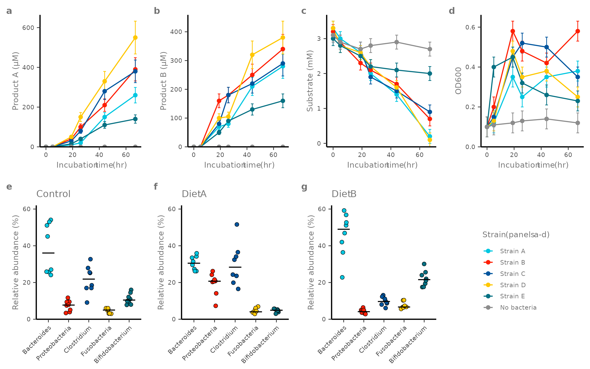
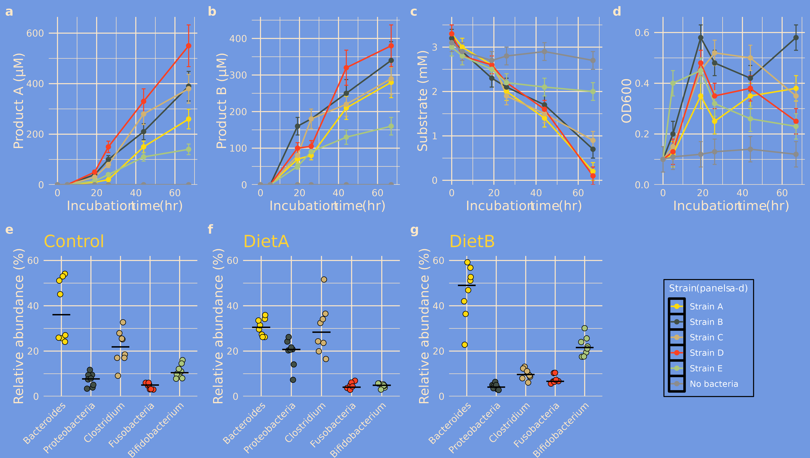
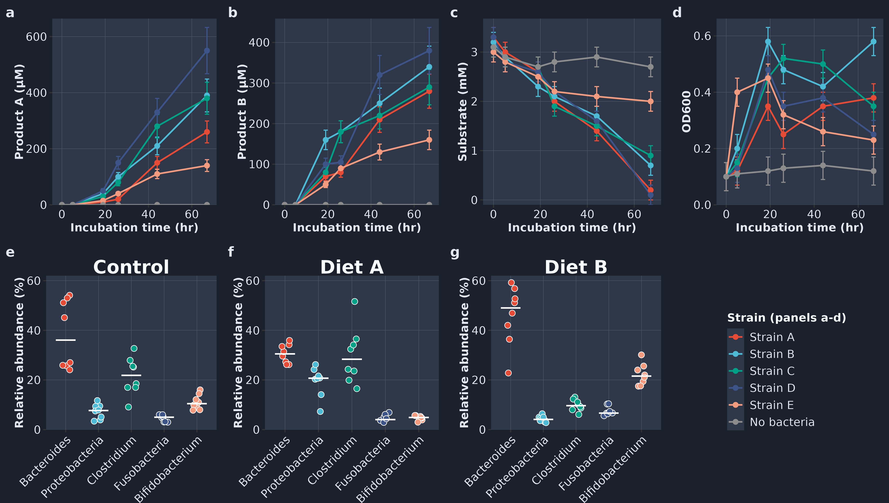

library(ggplot2)
library(themeset)
growth <- example_growth()
taxa <- example_taxa()
strains <- levels(growth$strain)Overview
A figure for a paper is rarely a single plot. It is a grid of panels
that should share one look and one set of conventions.
apply_theme_set() styles one plot at a time, so for a
multi-panel figure you apply the set to each panel and then assemble the
panels.
This article builds a seven-panel figure from the simulated data of
example_growth() and example_taxa(), and
restyles it by changing the name of the set. The figure follows the
conventions most journals expect:
- panels a to d show four measures of a growth experiment over time, one line per strain; the no-bacteria control is grey, whatever the palette
- panels e to g show the relative abundance of five taxa in three conditions; every sample is a point and the bar is the median
- one row for each kind of panel, in a grid of equal-sized panels, with one shared legend in a panel of its own
- bold lowercase panel tags
- sizes written for the final canvas: 183 mm wide with 7 pt text
The panels are assembled with cowplot, which
themeset already depends on.
1. The Panels
Start with the panels, without any theme. k is the width
of the canvas relative to 7.2 in (183 mm): line widths and point sizes
are written for that width and scale with it. ink is the
color of the outlines and of the median bars.
line_panel <- function(measure, k) {
d <- growth[growth$measure == measure, ]
ggplot(d, aes(time, value, color = strain)) +
geom_errorbar(aes(ymin = value - se, ymax = value + se), width = 2,
linewidth = 0.3 * k) +
geom_line(linewidth = 0.45 * k) +
geom_point(size = 1.2 * k) +
scale_x_continuous(breaks = seq(0, 60, 20)) +
scale_y_continuous(expand = expansion(mult = c(0, 0.05))) +
expand_limits(y = 0) +
# "\U{00B5}" is the micro sign: "uM" becomes the unit micromolar
labs(x = "Incubation time (hr)", y = sub("uM", "\U{00B5}M", measure),
color = "Strain (panels a-d)")
}
taxa_panel <- function(condition, k, ink) {
d <- taxa[taxa$condition == condition, ]
ggplot(d, aes(taxon, abundance, fill = taxon)) +
geom_point(position = position_jitter(width = 0.15, height = 0, seed = 1),
shape = 21, size = 1.5 * k, stroke = 0.25 * k, color = ink) +
stat_summary(fun = median, fun.min = median, fun.max = median,
geom = "errorbar", width = 0.6, linewidth = 0.4 * k, color = ink) +
# one y axis for the three conditions, so that they can be compared
scale_y_continuous(limits = c(0, 62), expand = expansion(mult = 0)) +
guides(x = guide_axis(angle = 45)) +
labs(title = condition, x = NULL, y = "Relative abundance (%)")
}2. Styling and Assembling
figure() builds the seven panels and puts them
together:
-
style()applies the set to a panel withapply_theme_set(), adds the scales you pass (a theme-only set brings none), sets the text size if you ask for one, and gives the panel a bold tag withlabs(tag = ). Every panel goes through it, so every panel looks the same. -
grey_reference()keeps the five strain colors of the set and makes the no-bacteria control grey. - The canvas color is read from the set, so that the space between the panels is not white on a dark set, and the outlines and medians turn white on a dark canvas.
- The legend is taken from panel a and set in the empty cell of the grid; the panels themselves have no legend.
-
cowplot::plot_grid()assembles two rows of four.align = "h"andaxis = "tb"line up the plot areas in a row.
# The fill of the set's plot background: the canvas around the panels
background <- function(plot) {
fill <- tryCatch(calc_element("plot.background", plot$theme)$fill,
error = function(e) NULL)
if (is.null(fill) || is.na(fill)) "white" else fill
}
figure <- function(set, width = 7.2, text = NULL, color = NULL, fill = NULL) {
k <- width / 7.2
# The set, your scales, the text size and a bold tag, the same for every panel.
# The tag has the color of the axis titles, which is readable on every set.
style <- function(p, tag) {
p <- apply_theme_set(p, set) + color + fill
if (!is.null(text)) {
p <- p + theme(text = element_text(size = text),
line = element_line(linewidth = 0.3 * k))
}
p + labs(tag = tag) +
theme(plot.tag = element_text(face = "bold", size = 8 * k,
color = calc_element("axis.title.x", p$theme)$colour))
}
# The five strains keep the colors of the set; the control is grey
grey_reference <- function(p) {
colors <- p$scales$get_scales("colour")$palette(length(strains))
colors[strains == "No bacteria"] <- "grey55"
suppressMessages(p + scale_color_manual(values = setNames(colors, strains)))
}
hide_legend <- function(p) p + theme(legend.position = "none")
pa <- grey_reference(style(line_panel("Product A (uM)", k), "a"))
canvas <- background(pa)
ink <- if (mean(grDevices::col2rgb(canvas)) < 128) "white" else "black"
pb <- grey_reference(style(line_panel("Product B (uM)", k), "b"))
pc <- grey_reference(style(line_panel("Substrate (mM)", k), "c"))
pd <- grey_reference(style(line_panel("OD600", k), "d"))
pe <- style(taxa_panel("Control", k, ink), "e")
pf <- style(taxa_panel("Diet A", k, ink), "f")
pg <- style(taxa_panel("Diet B", k, ink), "g")
legend <- cowplot::get_legend(
pa + theme(legend.position = "right", legend.key.size = unit(3.5 * k, "mm"))
)
top <- cowplot::plot_grid(hide_legend(pa), hide_legend(pb), hide_legend(pc),
hide_legend(pd), nrow = 1, align = "h", axis = "tb")
bottom <- cowplot::plot_grid(hide_legend(pe), hide_legend(pf), hide_legend(pg),
legend, nrow = 1, align = "h", axis = "tb")
cowplot::plot_grid(top, bottom, ncol = 1, rel_heights = c(1, 1.1)) +
theme(plot.background = element_rect(fill = canvas, color = NA))
}3. A Figure for Print
npg is a journal set: the classic theme,
with its white background, L-shaped axes and no grid, together with the
NPG palette of ggsci. It brings both the theme and the scales.
text = 7 sets the text size, and width is the
width of the canvas in inches: 7.2 in is 183 mm, the double-column width
of Nature journals.
figure("npg", width = 7.2, text = 7)
Simulated growth and community data. a-d, Product A, product B, substrate and OD600 over time for five strains and a no-bacteria control (grey). Points are means and error bars are standard errors of the mean. e-g, Relative abundance of five taxa in the control and two diets. Each point is one sample and bars are medians.
Click the figure to zoom. Axis tick labels are 0.8 times the text size, 5.6 pt here; journals usually ask for 5 to 7 pt text at the final size.
A theme-only set such as classic brings no scales, so
you pass the palette yourself:
figure("classic", width = 7.2, text = 7, color = scale_color_npg(), fill = scale_fill_npg())
draws the same figure.
4. The Same Figure with Other Sets
Only the set changes. olink is a complete set: it brings
its own theme and palette, and it follows the text size like
npg:
figure("olink", width = 7.2, text = 7)
The same figure with the olink set, at 183 mm and 7 pt.
The simpsons set is for slides and posters. Its text
sizes are fixed, so it needs a larger canvas, and no text
argument:
figure("simpsons", width = 12)
The same figure with the simpsons set, on a 12 in canvas.
midnight, a dark set, is another theme-only set, so it
needs a palette. A bright palette suits the dark background:
figure("midnight", width = 12,
color = scale_color_npg(), fill = scale_fill_npg())
The same figure with the midnight set and the npg palette.
5. Saving the Figure
Save at the size you drew at. A vector PDF keeps the text sharp at any zoom and embeds the fonts; the PNG is for previews and slides.
fig <- figure("npg", width = 7.2, text = 7)
ggsave("figure.pdf", fig, width = 183, height = 114, units = "mm",
device = cairo_pdf)
ggsave("figure.png", fig, width = 183, height = 114, units = "mm", dpi = 600)6. Other Ways to Style a Figure
Apply the set to the panels, not to the assembled figure. A cowplot grid is itself a ggplot object, so
apply_theme_set()accepts it, but it only changes the background around the panels.-
With patchwork,
+adds to the last panel only, soapply_theme_set(a | b | c, "simpsons")styles panel c alone. Use the&operator to style every panel: set_global_theme()styles every panel that is drawn while it is active, with no per-panel call. It sets the theme and the first three colors only; see Global and Custom Themes.Text size.
text = 7sets the root text size of the theme. Sets built on relative sizes follow it:classic, the journal sets,bw,minimal,few,tufteandolink. Sets with fixed point sizes mostly ignore it (simpsons,avatar), and a few follow it in part (cowplot,midnight). Draw those on a larger canvas.Palette size.
figure()takes six colors from the palette, one for each level ofstrain, and then turns the last one grey.fivethirtyeighthas three, so pass a larger scale withcolor =.
Summary
| To | Use |
|---|---|
| Style every panel with a set |
apply_theme_set(panel, "<set>") on each panel,
then assemble |
| Use a theme-only set | Add scale_color_*() and scale_fill_*() to
each panel |
| Tag the panels |
labs(tag = "a") and
theme(plot.tag = element_text(face = "bold"))
|
| Set the text size for print |
theme(text = element_text(size = 7)), on a set built on
relative sizes |
| Match the space between panels | Read the set’s plot.background and use it for the
canvas |
| Style a patchwork figure | The & operator:
<patchwork> & <theme>
|
| Style panels without calling the set on each |
set_global_theme("<set>") before drawing |